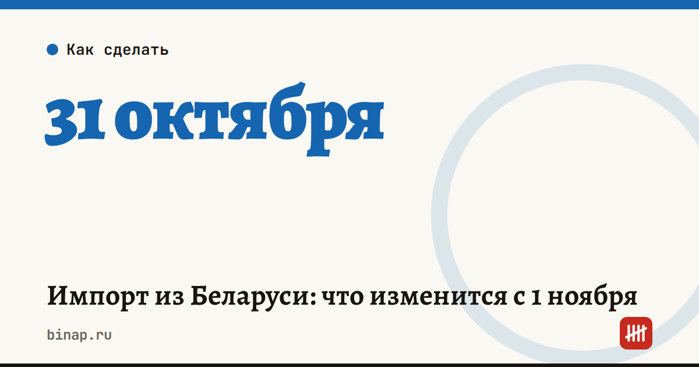

Импорт из Беларуси: без обеспечительного платежа до 30.06.2027

Ввозите товар из Беларуси? Освобождение от обеспечительного платежа в СПОТ продлили до 30 июня 2027 года. Платить не нужно, но документ о предстоящей поставке (ДОПП) всё равно придётся заполнить без ошибок.
Коротко
- По данным ФНС и «Коммерсанта», правительство продлило освобождение от обеспечительного платежа при ввозе товаров из Беларуси до 30 июня 2027 года включительно. Постановление от 30.10.2026 (по данным ФНС — № 1424) действует с 1 ноября 2026 года.
- Льгота — для товаров от организаций и ИП, зарегистрированных только в Беларуси.
- ДОПП подавать по-прежнему нужно, с отметкой об освобождении в графах 1Д, 1Е и 1.1.
- По данным Клерка, Минфин связывает продление с проектом декрета Союзного государства о СПОТ: если совместного контроля хватит, платёж для белорусского направления могут не вводить вовсе.
- Основание системы — Федеральный закон от 17.04.2026 № 101-ФЗ.
Сроки, изменения и разборы для ИП и самозанятых — каждое утро в Telegram и MAX. Подпишитесь, чтобы не пропустить.
Что заполнить в ДОПП
| Графа | Что указать |
|---|---|
| 1Д | код 2 — временное освобождение (или 1 — постоянная льгота) |
| 1Е | реквизиты акта-основания — нового постановления правительства |
| 1.1 | сумма обеспечения 0 |
Без этих граф система продолжит ждать обеспечение, и подача задержится (по данным ФНС).
Частые ошибки в платёжке, если платёж всё же нужен
ФНС называет: неверный КБК, ИНН и КПП сторон, 8-значный ОКТМО, статус плательщика 01 и нули в реквизитах 106–109. Сумма обеспечения должна покрывать платёж из ДОПП — ошибки часто возникают из-за округления, курса валюты и количества товара. Это пригодится при ввозе из других стран ЕАЭС и если поставщик зарегистрирован не только в Беларуси.
Что сделать сейчас
- Проверьте, что поставщик зарегистрирован только в Беларуси: от этого зависит, действует ли льгота.
- Оформляйте ДОПП по каждой партии с графами 1Д, 1Е и 1.1.
- Сохраняйте документы по каждой поставке: договор, ДОПП, транспортные документы.
- Поставьте в календарь 30 июня 2027 года и проверьте в мае, продлят ли освобождение снова.
- Сроки подачи уведомления в период льготы источники называют по-разному — уточните у своего таможенного брокера.
Что ещё нужно знать о проверке контрагентов — в статье как бесплатно проверить контрагента.
Частые вопросы
До какого числа не нужен обеспечительный платёж при ввозе из Беларуси? До 30 июня 2027 года включительно, для товаров от организаций и ИП, зарегистрированных только в Беларуси.
Нужно ли подавать ДОПП, если платёж не нужен? Да, с отметкой об освобождении в графах 1Д, 1Е и 1.1.
Что будет, если не заполнить графы освобождения? По данным ФНС, система продолжит ожидать обеспечение, и подача задержится.